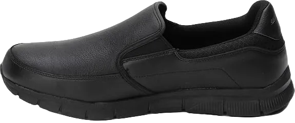
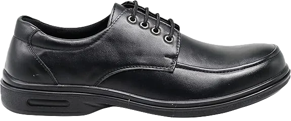

8 Best Shoes for Restaurant Manager
We frequently visit restaurants, enjoying the ambiance, décor, and especially the quality of the food. However, have we ever considered that working in a restaurant isn’t as glamorous as it seems? While employees enjoy the perk of indulging in delicious meals daily, there’s a significant responsibility that comes with the job, especially for a restaurant manager.
Being a restaurant manager is one of the most demanding roles one can undertake. The responsibilities can be overwhelming, making it a challenging position despite the enticing surroundings and culinary delights.
-
#1
Dansko Men’s Wayne
.webp)
The upper part of the shoe is crafted from genuine leather, making it incredibly comfortable and highly durable. This leather material also allows for breathability, ensuring that you won’t experience discomfort even after wearing the shoes for extended periods.
Both the insole and midsole are designed to provide maximum comfort, especially during long hours of standing and working. The midsole utilizes advanced PU technology, which is renowned for its comfort-enhancing properties.
The shoe's sole is made from synthetic materials, offering excellent shock absorption and traction on slippery surfaces. This design minimizes the risk of slipping, providing stability even in the event of spills. -
#2
Gelato Moc-Toe Slip Resistant
This shoe is a stylish and lightweight option that significantly enhances comfort, especially for those dealing with back pain. You won’t have to worry about its light weight compromising its durability or performance.
The upper part of the shoe is crafted from leather, making it both durable and resistant to stains. Additionally, it features waterproofing, ensuring that your feet stay dry regardless of the conditions.
The midsole is designed to provide maximum comfort, making it suitable for individuals recovering from foot injuries. The sole is made from synthetic materials, offering anti-skid properties for added safety. Plus, the leather upper is easy to clean, maintaining the shoe's appearance with minimal effort. -
#3
Skechers for Work Men’s Cottonwood
.webp)
This shoe offers exceptional comfort, making it an ideal choice for restaurant managers who spend long hours on their feet.
The upper portion of the shoe is crafted from a durable combination of leather and rubber, ensuring both style and resilience. Its lace-up design features metal eyelets for a secure fit.
The sole is made of nitrile rubber, providing anti-skid properties for safety, along with chemical resistance for durability. The midsole incorporates memory foam, renowned for its comfort as it conforms to the shape of the feet, delivering personalized support throughout the day. -
#4
AL Men’s Black Restaurant Working
This shoe is designed with an air cushioning feature that provides maximum comfort for restaurant managers throughout their busy shifts. The air sole compresses upon impact, effectively absorbing shocks and protecting the feet.
The insole is exceptionally soft, making this one of the most comfortable shoes on the market. Additionally, the lightweight design, thanks to the air cushion, enhances overall comfort while reducing fatigue.
Equipped with a non-slip sole, this shoe is perfect for environments prone to oily or watery spills, making it a practical choice for restaurant managers who need to stay safe on their feet. -
#5
Klogs Footwear Men’s Edge
.webp)
This shoe features an open-back design, making it incredibly easy to slip on and off during break times. This convenience allows for quick rests without the hassle of fully removing footwear.
Designed with a PUR grip sole, it offers excellent cushioning for the feet while effectively absorbing shocks. The slip-resistant outsole provides a secure grip, ensuring stability on any slippery surfaces or leaks.
Additionally, the shoe incorporates a toe grip for enhanced comfort and traction. Made from materials that are easy to clean, this shoe maintains its appearance regardless of how dirty it gets. -
#6
Skechers for Work Women’s Eldred Shoe
.webp)
The upper part of the shoe is crafted from leather, while the sole is constructed from rubber, featuring a collar made of mesh. The leather ensures durability and allows for breathability, while the rubber sole provides excellent grip, particularly on kitchen floors.
Additionally, the leather makes this shoe both oil and waterproof, ensuring the safety of your feet in a busy restaurant environment. The insole and midsole are made from memory foam, delivering exceptional comfort for those engaged in demanding managerial tasks.
Moreover, the rubber sole offers protection against electric currents, making this shoe a reliable choice for restaurant managers. -
#7
Brooks Women’s Addiction Walker
.webp)
The upper of the shoe is crafted from full-grain leather, making it an ideal choice for style-conscious women. Not only does this leather give the shoe a chic appearance, but it also ensures durability.
The outsole is designed to provide maximum grip on various surfaces, made from synthetic materials that enhance stability and protect the feet. The midsole is constructed from high-quality energy-returning MoGo material, delivering exceptional comfort for women on their feet.
Additionally, the midsole safeguards against shocks, making it perfect for busy restaurant environments. This shoe offers excellent arch support, contributing to its durability thanks to the quality leather used in its construction. -
#8
KEEN Utility Women’s PTC
.webp)
Constructed from high-quality leather, this shoe is designed for durability and longevity.
The outsole offers exceptional support for the feet, making it ideal for long hours of work. Additionally, its anti-skid feature ensures stability on wet surfaces, reducing the risk of slips and falls.
Featuring a midsole made of PU, cork, and memory foam, this shoe provides maximum comfort for the wearer. It also offers excellent support for the arch of the foot, enhancing overall comfort during daily activities.